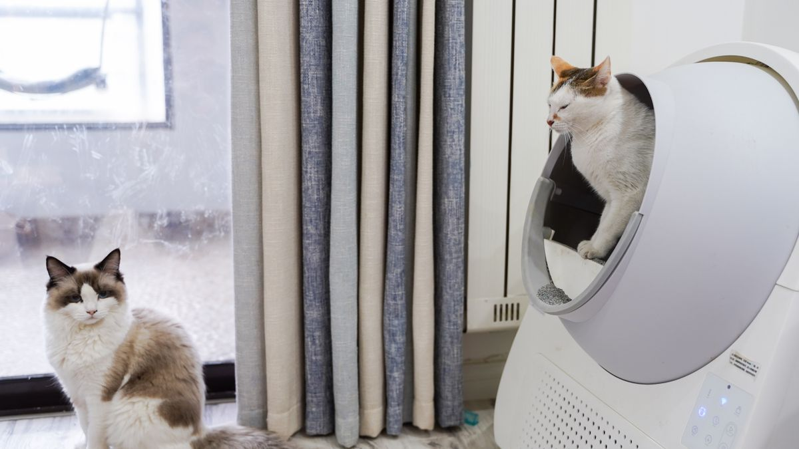

왜 미리 합의가 필요할까
입양 후 3개월 안에 가장 많이 터지는 갈등이 '누가 산책할 것인가'입니다. 아침 급여 5분, 저녁 산책 20분, 주 2회 배변 구역 청소 10분처럼 작은 일이 한 사람에게 30일 누적되면 월 15시간 이상의 돌봄 부담이 됩니다.

특히 맞벌이 가정에서 퇴근 시간이 30분만 어긋나도 급여가 2시간 밀리고, 그날 배변 사고가 늘어나는 패턴이 반복됩니다. 입양 전 30분 합의가 이후 1년의 피로를 줄입니다.
합의할 주제 목록
- 일상 돌봄: 급여 2회, 산책 1~2회(각 15분), 배변 관리, 주 1회 그루밍 10분
- 비용: 사료 2~4만 원/2kg, 모래 1~2만 원/월, 용품·검진 연 30~80만 원 범위
- 생활 규칙: 침실 출입(예: 밤 10시 이후 거실만), 소파 규칙, 손님 방문 시 위치
- 외출·여행: 1박 이상 외출 시 펫시터(회당 3~5만 원) 또는 지인 돌봄
- 장기 계획: 이사, 출산, 노령기(월 관리비 증가)에 대한 기본 태도
실제로 정리하는 방법
2시간 회의보다 30분 체크리스트가 실용적입니다. 각 항목에 1차 담당·2차 담당(대리)을 적고, '둘 다 야근인 날' 규칙도 함께 씁니다. 예: 수요일은 항상 이웃 펫시터 연락처로 대체.

완벽한 합의보다 30일 후 재조정 가능한 기준을 만드는 것이 목표입니다. 매월 첫 일요일 15분만 다시 보면 운영이 쉬워집니다.
아이가 있는 가정에서
초등학생에게는 물그릇 확인·장난감 정리 같은 5분짜리 역할부터 맡깁니다. 급여량 조절·약 복용·병원 동행은 어른이 맡는 편이 안전합니다. '강아지 담당'이라는 말이 실제로 매일 30분 이상의 노동을 뜻한다는 점을 아이와 먼저 맞춰 두세요.

실전 적용 노트
입양 전 합의는 감정을 맞추는 일이 아니라, 하루 돌봄을 누가·언제·어디까지 할지 적는 일에 가깝습니다. '사랑한다'는 말보다 '6시 산책은 누가 하는가'가 2주 차에 더 자주 드러납니다.
표는 A4 한 장이면 충분합니다. 급여 2회, 산책 2회, 패드·모래 점검, 주간 청소 담당을 이름과 함께 적고 냉장고에 붙이세요. 대체 담당(출장·야근)도 미리 표시해 두면 갈등이 줄어듭니다.
비용 분담도 숫자로 적습니다. 사료·모래·병원·미용 중 고정비와 변동비를 나누고, 월 상한을 정해 두면 입양 후 지출 논쟁을 예방할 수 있습니다.
아이가 있는 가정은 역할을 5분 단위로 나눕니다. 물그릇 확인·장난감 정리 같은 짧은 역할부터 맡기고, 급여량·약·병원 동행은 어른이 담당하는 편이 안전합니다.
입양 후 2주에 한 번 표를 열어 매일 빠지는 항목을 하나만 수정하세요. 완벽한 분담보다 80% 지켜지는 표가 오래 갑니다.
합의서가 없어도 입양은 가능하지만, 있으면 책임 다툼이 '표에 따라 내가 할게'로 바뀌는 경우가 많습니다.
휴가·출장이 잦은 가정은 '비상 연락망'을 표 아래에 적어 두세요. 이웃·친척·펫시터 중 누구에게 먼저 연락할지 미리 정하면 급한 날 혼란이 줄어듭니다.
실내 배변 허용 범위, 침대·소파 출입, 손님 방문 시 규칙도 숫자 없이 문장 한 줄로 적으면 충분합니다. '현관 문 열릴 때는 안방 문 닫기'처럼 행동 단위로 쓰는 편이 지키기 쉽습니다.
입양 취소나 재입양 가능성까지 논의하기 어렵다면, 최소한 '1개월 적응 기간 후 표 재검토'만이라도 날짜를 박아 두세요.
입양 전 합의 보충 체크리스트입니다.
- 비상 연락망을 표 아래에 적었습니다.
- 침대·소파·손님 규칙을 한 줄로 정리했습니다.
- 1개월 후 표 재검토 날짜를 박았습니다.
실전 노트는 하루에 전부 적용하기보다, 체크리스트 3개만 골라 2주 반복하는 방식이 오래 갑니다. 잘 되는 항목만 남기고 나머지는 과감히 빼도 괜찮습니다.
마무리로, 이번 주에는 체크리스트 3개만 골라 2주 반복해 보세요. 작은 성공이 쌓이면 나머지는 자연스럽게 늘어납니다.
기록이 쌓이면 병원·상담 때 설명이 쉬워집니다. 한 줄 메모라도 같은 항목으로 이어 쓰는 것이 핵심입니다.
완벽한 루틴보다 80% 지켜지는 루틴이 오래 갑니다. 안 된 날은 원인 한 줄만 적고 다음 주에 조정하세요.
오늘 당장 하나만 고른다면, 체크리스트 맨 위 항목부터 시작해 보세요. 나머지는 다음 주로 미뤄도 괜찮습니다.
가족이 함께 돌본다면, 누가 했는지 체크박스 한 칸만 추가해도 누락·중복이 줄어듭니다.
검색으로 답을 찾기 전에 7일 메모를 먼저 정리해 보세요. 증상 설명이 훨씬 빨라지는 경우가 많습니다.
새 용품·새 사료·새 루틴은 동시에 바꾸지 않습니다. 한 가지만 바꾸고 5일 관찰하는 편이 안전합니다.
이번 달 목표는 '매일 완벽'이 아니라 '이번 주 3회 성공'입니다. 0회에서 1회로 바뀌는 것만으로도 충분한 진전입니다.
정리하며
합의서를 쓴 가정과 안 쓴 가정의 차이는 입양 2주 차에 가장 선명해집니다. 문서가 없으면 '원래 네가 하기로 했잖아'가 반복되고, 있으면 '표에 따라 내가 할게'로 끝나는 경우가 많습니다.
저는 입양 상담 때 '사랑한다'는 말보다 '누가 6시에 산책한다'는 문장이 더 중요하다고 말합니다. 감정은 흔들려도 표는 남으니까요.
합의서는 완벽할 필요 없습니다. 누가 몇 시에 산책하는지만 적혀 있어도 첫 2주가 달라집니다.
초보자가 자주 실수하는 포인트
- 돌봄을 한 사람에게만 맡기고 합의 없이 진행
- 비용 범위를 말로만 정하고 월 5만 원도 기록 안 함
- 여행·출장 시 대체 계획을 미리 세우지 않음
- 아이에게 실질 돌봄을 전가하고 어른은 방관
- 합의 후 3개월간 재점검 없이 방치
체크리스트
- 일상 돌봄 1차·2차 담당 정하기
- 월 예산 상한선(사료·모래·검진) 합의
- 실내 출입·소파 규칙 3줄로 정리
- 1박 이상 외출 시 돌봄 방법·비용 정하기
- 매월 첫 일요일 15분 재점검 날짜 잡기
자주 묻는 질문
- 아이에게 어떤 역할을 맡기면 좋을까요?
- 물그릇 리필 확인, 장난감 수납 등 5분짜리 역할부터 시작하고, 급여·약은 어른이 맡으세요.
이 글은 초보자 기준으로 이해하기 쉽게 정리되었으며, 내용은 운영 과정에서 순차적으로 보완될 수 있습니다. 수의사 등 전문가의 진단·처치를 대체하지 않습니다.